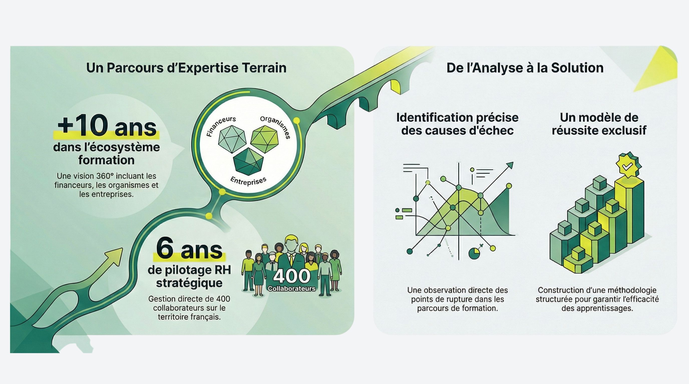
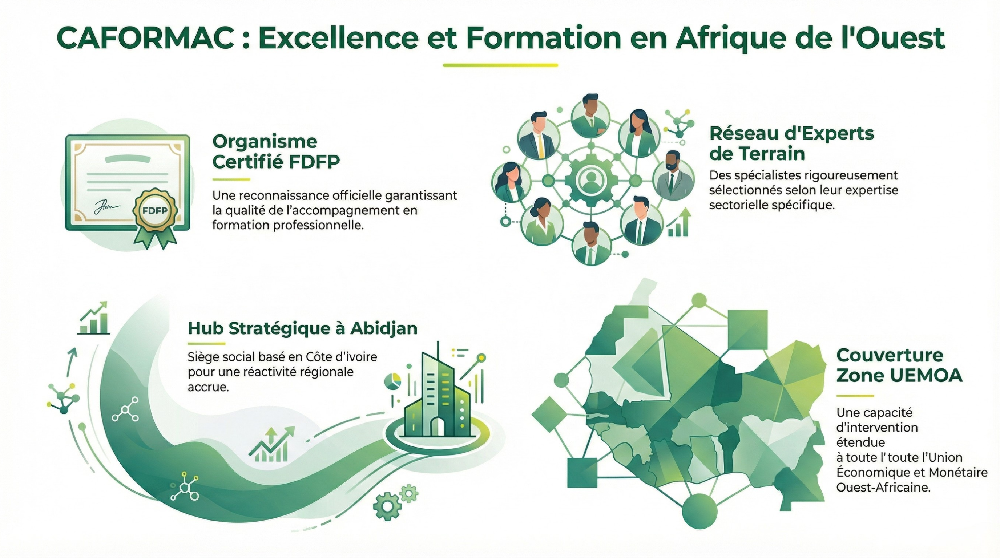

On n'attend pas que tout soit parfait pour agir.
On commence là où l'on peut avoir un impact réel.
C'est ce qui m'a ramenée en Côte d'Ivoire.
En 2020, j'ai repris CAFORMAC et commencé à intervenir auprès d'entreprises ivoiriennes.
Les dispositifs étaient sérieux. Les participants engagés. En salle, tout fonctionnait.
Et pourtant, après plusieurs missions, un sentiment persistait : le travail n'était pas abouti.
Les équipes ressortaient motivées. Mais quelques semaines plus tard, le terrain racontait une autre histoire.
C'est à Abidjan que ce constat s'est imposé : la formation n'échoue pas par manque de contenu.
Elle échoue par manque de pilotage.
Alors j'ai décidé de structurer autrement : formaliser une méthode, outiller le suivi, exiger des résultats observables.
C'est ce travail qui façonne aujourd'hui CAFORMAC.
Depuis Abidjan, pour la zone UEMOA.
